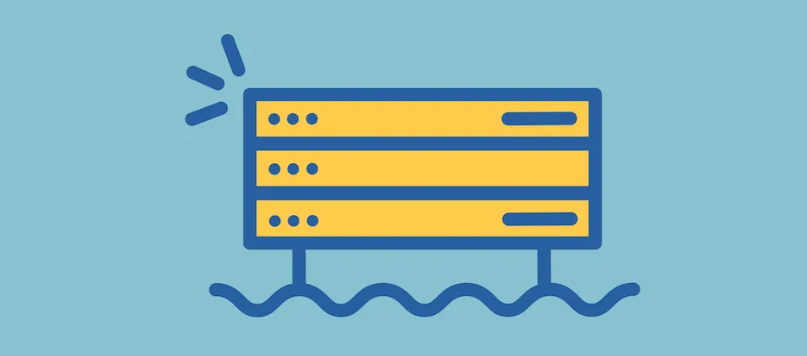

|  |
|
j’ai 21 ans Je vis à Marseille, passionées par les nouvelles technologies, mais aussi par le gaming et le sport
streamer a temp partiel
J’ai Bac Pro Technicien d’usinage et fait 1 ans de BTS Cprp (conception des processus de réalisation de produit)
j’ai eu une année blanche avant d’intégrer la plateforme
* gaming
* nouvelles technologie
* le sport
* Foot
* stream